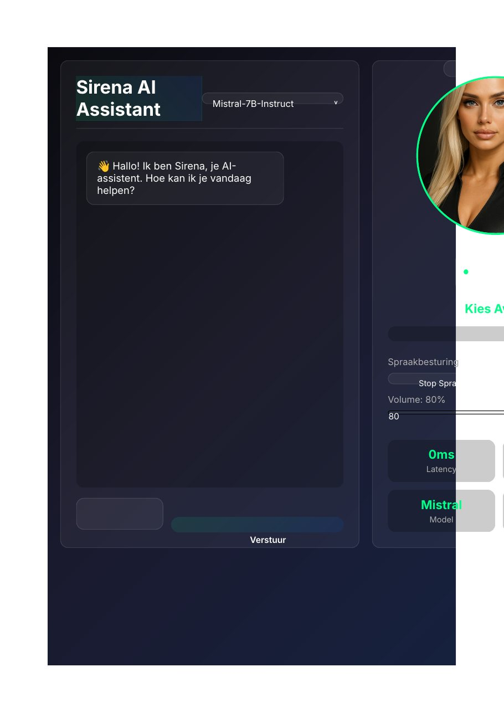

ASSISTENT · STEM · AVATAR
Sirena
Een zichtbare Vlaamse desktopassistent met een lokaal AI-brein, stem en avatar — die niet alleen antwoordt, maar echte acties op je computer uitvoert.
RESULTAAT
Praat, luistert én voert echte computeracties uit — met een lokaal AI-brein, geen cloud.

01 HET PROBLEEM
AI-assistenten zitten meestal in een chatvenster en blijven bij praten. Sirena is een experiment in de andere richting: een assistent die je ziet en hoort, in het Nederlands van hier, en die dingen kan dóén op je computer.
02 WAT HET DOET
- Zichtbaar en hoorbaar
- Een avatar op je bureaublad, met stem in het Vlaams. Je praat ertegen, ze praat terug.
- Lokaal brein
- Het taalmodel draait op je eigen machine. Je gesprekken en bestanden verlaten je computer niet.
- Echte acties
- Koppelingen om bestanden te openen, programma's te starten, informatie op te zoeken en taken uit te voeren — met bevestiging waar dat hoort.
- Uitbreidbaar
- Nieuwe vaardigheden toevoegen als modules, zodat Sirena meegroeit met wat je nodig hebt.
03 WAT IK ERVAN LEERDE
Spraak en avatar maken een assistent meteen ‘echter’ — en dus ook strenger beoordeeld. Latency, betrouwbaarheid en duidelijke bevestigingen wegen zwaarder dan nog een feature.
INTERESSE?
Laten we praten.
Vertel me wat je ervan vindt — of wat je ermee zou willen doen.